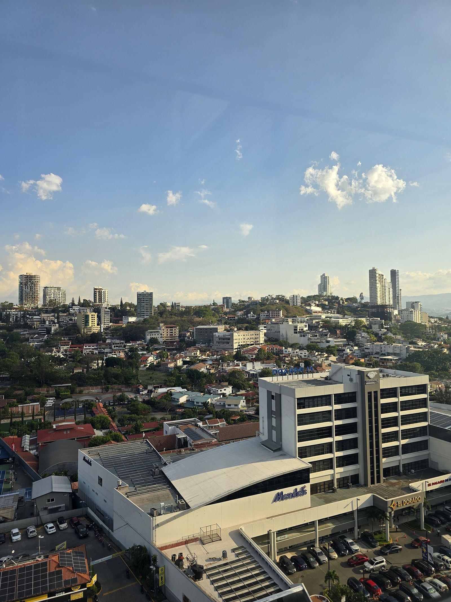
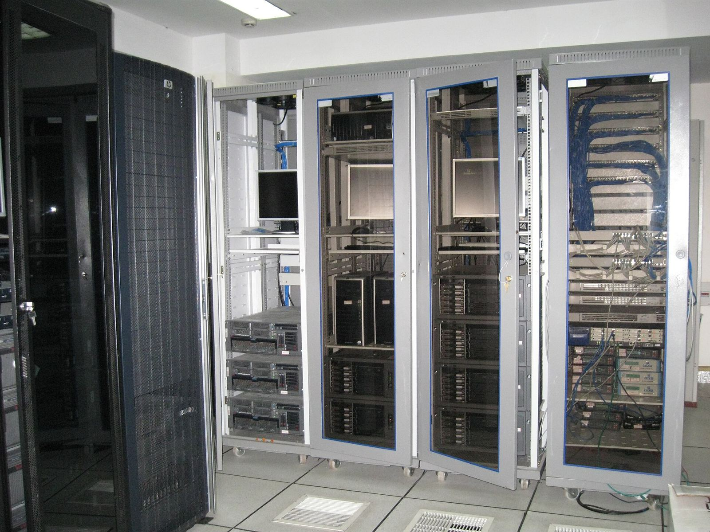

Servicio y objetivo
Atendemos a docentes y estudiantes para que el Campus funcione el 99,90 % del mes y cada caso tenga respuesta medida.
El servicio
Soporte para entrar al Campus, subir tareas, hacer exámenes en línea y administrar cursos, con prioridad para lo que impide entregar o evaluar.
Por qué importa
Si la plataforma se cae durante un examen con hora fija, cientos de estudiantes pierden su intento. Este acuerdo deja por escrito qué se atiende, en cuánto tiempo y quién responde.
Un nivel de servicio se define “con criterios medibles para la entrega de un determinado servicio” (Irontec, 2023, p. 10).

Lo que cubrey lo que deja fuera
Ver quién respondeQuién responde
Cada reporte sube por niveles, del usuario al proveedor externo, como en el modelo de cuatro niveles de la lectura (Irontec, 2023, p. 5). Toque cada franja para ver qué le toca.
Estudiante o docente
Quien reporta- Da su número de cuenta y el curso
- Adjunta una captura del error
- Confirma cuando el caso se cierra
Abre el caso en el gestor de incidencias con su número de cuenta, el curso afectado y una captura. Si es crítico, también llama a la línea de emergencia.
Mesa de ayuda
Nivel 1- Asigna P1, P2 o P3
- Resuelve acceso y dudas de uso
- Escala lo que no puede resolver
Recibe el reporte, le asigna prioridad, resuelve lo básico (acceso y uso) y escala lo demás al nivel 2.
Soporte especializado
Nivel 2- Tareas y cuestionarios con error
- Permisos y grupos de cursos
- Escala al nivel 3 si es del servidor
Atiende fallas de la plataforma: tareas que no cargan, cuestionarios con error y permisos de cursos.
Administración de sistemas
Nivel 3- Restaura copias de seguridad
- Corrige caídas del servidor
- Documenta la causa de fondo
Servidor, base de datos y copias de seguridad. Busca la causa de fondo y apoya a los niveles 1 y 2.
Proveedor externo
Nivel 4- Actualizaciones del sistema
- Fallas del hospedaje
- Solo con contrato aparte
El fabricante de la plataforma o del hospedaje. Queda fuera del acuerdo salvo que se contrate aparte.
Coordinador del SLA
Gestión del acuerdo- Calcula la disponibilidad
- Envía el informe en 5 días hábiles
- Convoca la revisión trimestral
Mide los indicadores, entrega el informe mensual a la Facultad y convoca la revisión de cada trimestre.
Disponibilidad mínima del Campus en el mes. Se calcula como 100 × (tiempo acordado − caídas no programadas) ÷ tiempo acordado (Irontec, 2023, p. 10).
Lo que se mide cada mes
Es toda la caída que permite el 0,10 % en un mes de 30 días: casi lo que dura un examen en línea de 40 minutos.
Copias de seguridad exitosas al mes (Irontec, 2023, p. 14).
Menos de 2 h
Tiempo medio de respuesta a casos críticos en el mes.
90 % o más
Casos resueltos dentro del plazo, entre todos los casos del mes.
1 informe al mes
Entregado en los primeros 5 días hábiles (Irontec, 2023, p. 14).
4 de 5 o más
Satisfacción del usuario, medida con una encuesta al cerrar el caso.
La disponibilidad, las copias de seguridad y el informe mensual vienen de la lectura. Las metas de casos a tiempo y de satisfacción son propias de este acuerdo.
Respuesta en 4 horas2 horas1 hora
Es el plazo para responder un caso crítico (P1) en la Opción 1, que no garantiza un plazo de resolución.Es el plazo para responder un caso crítico (P1) en la Opción 2, que este acuerdo contrata. Se resuelve en 4 horas.Es el plazo para responder un caso crítico (P1) en la Opción 3, la más rápida y la más costosa. Se resuelve en 2 horas.
Ver la tabla completa| Prioridad | Ejemplo en el Campus | Respuesta | Resolución |
|---|---|---|---|
| P1 crítico | La plataforma no carga o un examen en curso no abre para nadie. | 4 h2 h1 h | sin plazo4 h2 h |
| P2 normal | Funciona con límites: una tarea no deja subir archivos. | 8 h4 h2 h | sin plazo8 h4 h |
| P3 consulta | No hay falla: el usuario pide información. | 1 día hábil | 2 días hábiles |
P1 y P2 usan la tabla de opciones de la lectura (Irontec, 2023, p. 16). P3 es propio de este acuerdo y se cuenta en horario de atención.
Estas son las cinco piezas que vigilan que el acuerdo se cumpla.
Cómo se vigila
Gestor de incidencias
Cada caso entra por un solo canal con número de ticket. El sistema guarda la hora de recepción, de respuesta y de cierre, con prácticas ITIL (Irontec, 2023, p. 22).
Operadoras de conmutador, 1945: la mesa de ayuda de antes. Monitoreo 24×7
Una herramienta revisa la disponibilidad del Campus las 24 horas, todo el año, y avisa al nivel 3 cuando hay una caída.

Tegucigalpa al atardecer: el monitoreo sigue fuera de horario. Informe mensual
Trae la disponibilidad, las copias de seguridad exitosas, la lista completa de incidencias y el tiempo medio por petición (Irontec, 2023, p. 14).

Una sala de servidores: de aquí salen los datos del informe. Revisión trimestral
La Facultad y la Unidad de Tecnología revisan los resultados cada tres meses y ajustan metas o recursos.
Tegucigalpa desde El Picacho.
| Servicio | Horario | Canal |
|---|---|---|
| Mesa de ayuda | 11×5, de 8:00 a 19:00 | Gestor de incidencias |
| Monitoreo | 24×7×365 | Automático |
| Casos críticos en exámenes | 24×7×365 | Línea de emergencia |
| Copia de seguridad | 1 vez al día, de noche | Automático |
Si no se cumple
Como es un acuerdo interno, la compensación es un plan de acción en lugar de un crédito en dinero.
¿Cómo se reporta un incumplimiento?
La Facultad lo reporta dentro de 10 días hábiles, con el servicio afectado, la fecha y la evidencia, como pide la lectura (Irontec, 2023, p. 19).
¿Y si la disponibilidad queda entre 98 % y 99,9 %?
Plan de mejora en 5 días hábiles. En la lectura, con un cliente externo, sería un crédito del 10 %.
¿Y si queda entre 95 % y menos de 98 %?
Informe a la Decanatura y refuerzo de personal. En la lectura sería un crédito del 20 %.
¿Y si queda entre 90 % y menos de 95 %?
Revisión del acuerdo con las autoridades. En la lectura sería un crédito del 30 %.
¿Y si baja de 90 %?
Se reprograman los exámenes afectados y se revisa al proveedor externo. En la lectura sería un crédito del 50 % (Irontec, 2023, p. 19).
¿Qué no cuenta como incumplimiento?
Las caídas por fuerza mayor, los ataques externos y el mantenimiento programado (Irontec, 2023, pp. 20-21).
¿Qué prioridad tiene mi caso?
P1 crítico: el servicio no se puede usar o la seguridad está en riesgo. Repórtelo y llame a la línea de emergencia.
P2 normal: el Campus funciona, pero algo falla.
P3 consulta: no hay falla y necesita saber cómo hacer algo.